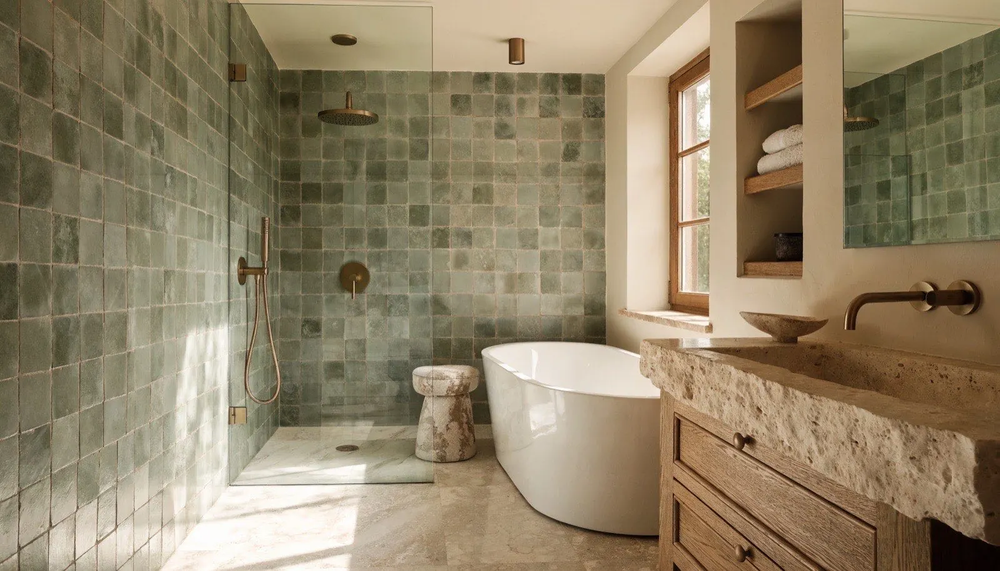
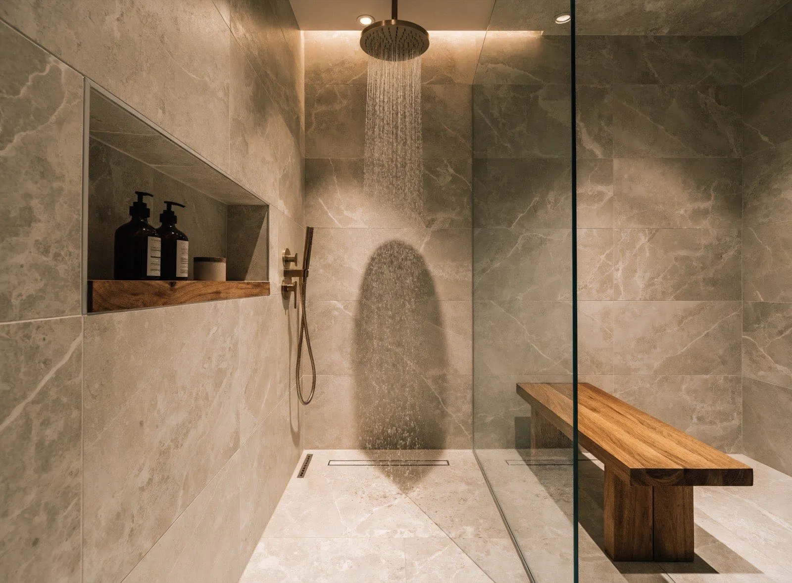
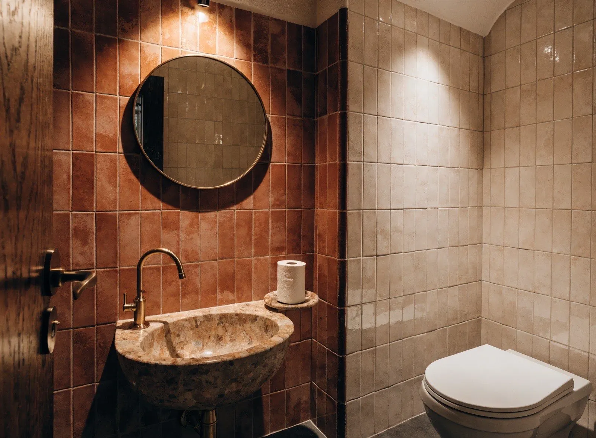
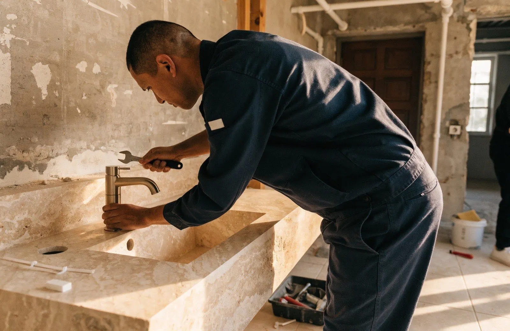
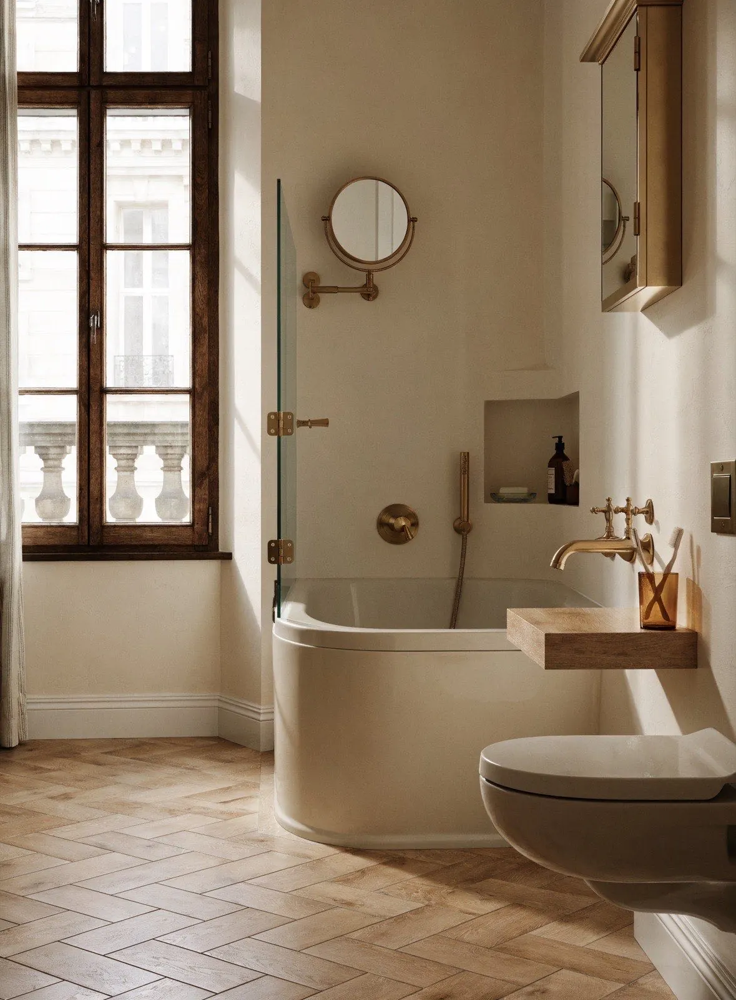
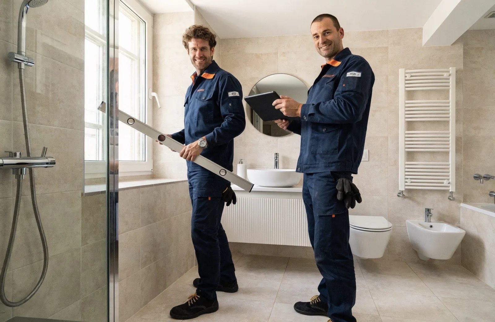
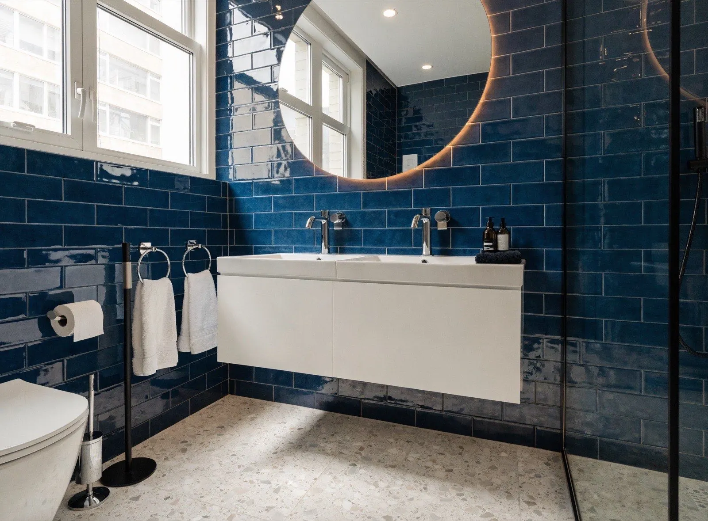
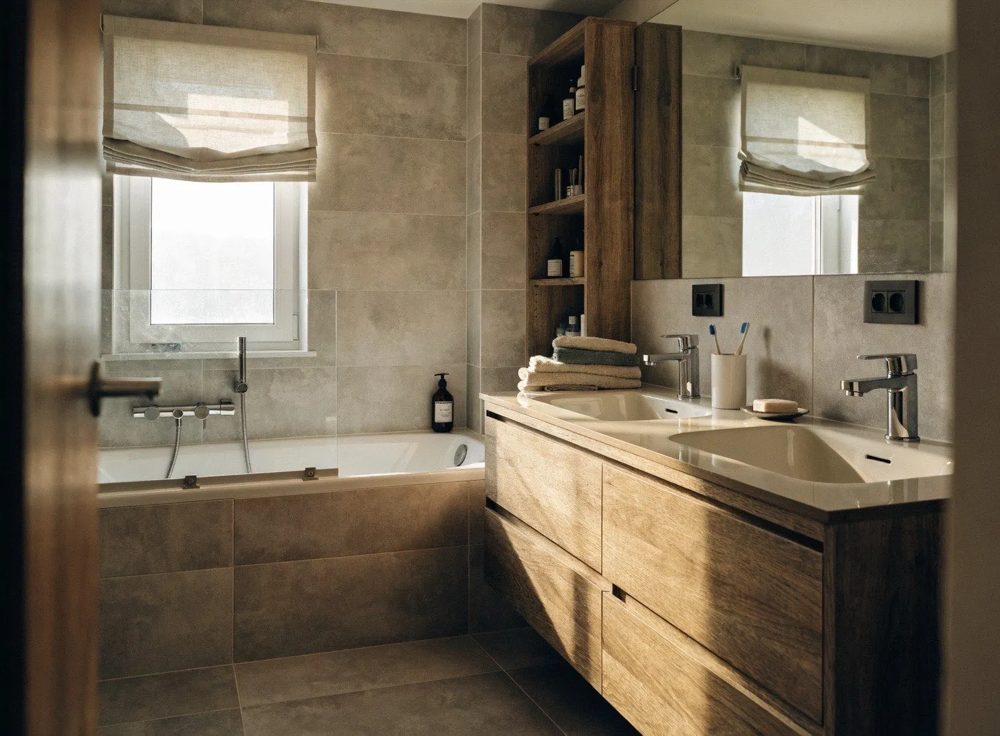

Salle de bain complète
Conception, plomberie, carrelage, meubles, éclairage : une salle de bain neuve de A à Z, livrée en 2 à 3 semaines.
DécouvrirSalle de bain complète, douche italienne, WC, adaptation senior : Allo Sanitaire Express rénove vos espaces sanitaires de A à Z. Étude gratuite, devis ferme sous 24h, chantier propre et garanti 10 ans.
Décrivez votre projet : un conseiller vous rappelle sous 2h ouvrées avec une première estimation.
Après visite technique, vous recevez un devis détaillé poste par poste. Le prix annoncé est le prix payé.
Plomberie, étanchéité, carrelage : tous nos travaux sont couverts par une assurance décennale.
Plombier, carreleur, électricien : nous coordonnons tous les corps de métier. Vous n'appelez qu'un numéro.
Fuite, dégât des eaux, WC bouché en plein chantier ou non : notre équipe dépannage reste joignable jour et nuit.
De la salle de bain familiale complète au simple remplacement de WC, nous concevons, démolissons, installons et livrons un espace prêt à vivre.

Conception, plomberie, carrelage, meubles, éclairage : une salle de bain neuve de A à Z, livrée en 2 à 3 semaines.
Découvrir
Remplacement de baignoire par une douche de plain-pied : étanchéité parfaite, receveur extra-plat, paroi sur mesure.
Découvrir
WC suspendu, lave-mains, remplacement complet de vos toilettes : un espace optimisé même dans quelques mètres carrés.
Découvrir
Douche sécurisée, sol antidérapant, barres d'appui élégantes : restez chez vous en toute sécurité, avec les aides mobilisables.
Découvrir
Fuite, débouchage WC ou canalisation, dégât des eaux : l'ADN d'Allo Sanitaire Express, disponible 24h/24 et 7j/7.
Découvrir
Salle d'eau de 3 m², salle de bain parisienne étroite : nos agenceurs exploitent chaque centimètre sans sacrifier le style.
Demander conseil
Nous venons du dépannage et de l'assainissement d'urgence : la plomberie, l'étanchéité et les évacuations n'ont aucun secret pour nous. C'est cette exigence technique que nous mettons aujourd'hui au service de la rénovation de vos salles de bain.
Remplissez le formulaire en 1 minute. Un conseiller vous rappelle sous 2h ouvrées pour cerner votre projet.
Un technicien se déplace gratuitement, prend les mesures et contrôle la plomberie. Devis détaillé sous 24h.
Date fixée ensemble, fournitures commandées, chantier mené en continu : 5 à 15 jours selon le projet.
Visite de réception ensemble, dossier photos remis, garanties activées. Vous profitez, on reste joignables.
Pas de mauvaise surprise chez Allo Sanitaire Express : nos fourchettes de prix sont publiques, et après la visite technique gratuite votre devis est ferme et définitif. TVA réduite à 10 % sur la rénovation de logements de plus de 2 ans.
| Projet | Budget indicatif TTC |
|---|---|
| Remplacement baignoire → douche | 3 500 – 6 000 € |
| Salle d'eau complète (3-4 m²) | 4 500 – 6 500 € |
| Salle de bain complète (5-7 m²) | 6 500 – 9 500 € |
| Rénovation WC | 450 – 4 500 € |

Modèles de douches italiennes, budgets réels constatés sur nos chantiers, conseils de nos artisans : le catalogue se télécharge tout de suite et arrive aussi dans votre boîte mail.
Chaque chantier est photographié et documenté. Voici quelques projets récents en Seine-Saint-Denis et à Paris.

Rosny-sous-Bois · 14 jours
Livry-Gargan · 8 jours
Décrivez votre projet en 1 minute. Étude gratuite, sans engagement, réponse sous 2h ouvrées.
« Baignoire remplacée par une douche italienne en 6 jours, chantier impeccable et protégé. Le devis a été respecté au centime près. »
« Salle de bain complète refaite pour mes parents avec douche sécurisée. Équipe ponctuelle, de bon conseil, et très respectueuse. »
« Ils ont d'abord réparé une fuite en urgence un dimanche, puis rénové tout notre WC. Sérieux du dépannage jusqu'aux finitions. »
Comptez en moyenne 4 500 à 8 000 € pour une salle de bain de 4 à 6 m² rénovée de A à Z (démolition, plomberie, carrelage, sanitaires, meubles). Un remplacement de baignoire par une douche italienne se situe entre 3 500 et 6 000 €. Après visite technique gratuite, votre devis est ferme : le prix annoncé est le prix payé.
Une salle de bain complète demande 10 à 15 jours ouvrés, une douche italienne 5 à 7 jours, un WC 2 à 3 jours. Nous travaillons en continu sur votre chantier, sans interruption entre les corps de métier.
Oui, totalement. La visite technique à domicile, l'étude de votre projet et le devis détaillé sont gratuits et sans engagement, partout en Seine-Saint-Denis, à Paris et en Île-de-France.
Oui. L'aide MaPrimeAdapt' peut financer jusqu'à 70 % des travaux d'adaptation (douche de plain-pied, barres d'appui, sol antidérapant) sous conditions de ressources et d'âge. Nous vous indiquons les dispositifs mobilisables lors de la visite.
Oui, c'est notre ADN : Allo Sanitaire Express est née du dépannage sanitaire et de l'assainissement. Notre équipe urgence intervient 24h/24 et 7j/7 pour les fuites, débouchages et dégâts des eaux au 07 66 32 57 13.
Nos propres équipes : plombiers, carreleurs et agenceurs salariés, encadrés par un conducteur de travaux. Aucune sous-traitance anonyme, un seul interlocuteur du devis à la réception, et une garantie décennale sur l'ensemble.
Oui, si votre logement est achevé depuis plus de 2 ans (résidence principale ou secondaire), la rénovation de salle de bain bénéficie de la TVA réduite à 10 % sur la main-d'œuvre et les fournitures posées par nos soins. Elle est appliquée directement sur votre devis : vous n'avez aucune démarche à faire, juste une attestation simplifiée à signer.
Oui, c'est le cas de la grande majorité de nos clients. Le chantier est confiné et protégé, les coupures d'eau sont annoncées à l'avance et limitées à quelques heures, et nous faisons en sorte de vous laisser un point d'eau et des WC utilisables chaque soir. Le chantier est nettoyé quotidiennement.
Basés en proche couronne, nous rénovons vos salles de bain dans tout le 93 et au-delà.